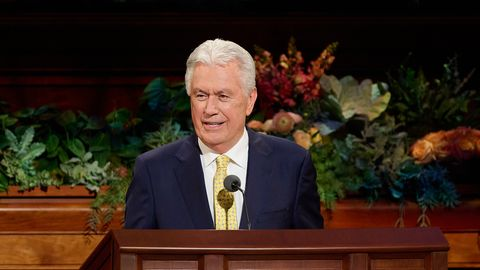

Book of Mormon Verse of the Day
And then shall they know their Redeemer, who is Jesus Christ, the Son of God; and then shall they be gathered in from the four quarters of the earth unto their own lands, from whence they have been dispersed; yea, as the Lord liveth so shall it be. Amen.
Come, Follow Me Verse of the Day
This week: “There Is No Other God That Can Deliver”: Daniel 1–7
If it be so, our God whom we serve is able to deliver us from the burning fiery furnace, and he will deliver us out of thine hand, O king.
General Conference Quote of the Day
On this path to more unity, let us not miss the unifying power of the sacrament. Each week we gather as fellow disciples of Jesus Christ to renew our baptismal covenant and to remember all the covenants we’ve personally made with God. My dear brothers and sisters, the sacrament can become a fresh starting point for our personal relationship with God and for a greater Christ-centered unity in our lives.

President Dieter F. UchtdorfChrist-Centered UnityOctober 2026